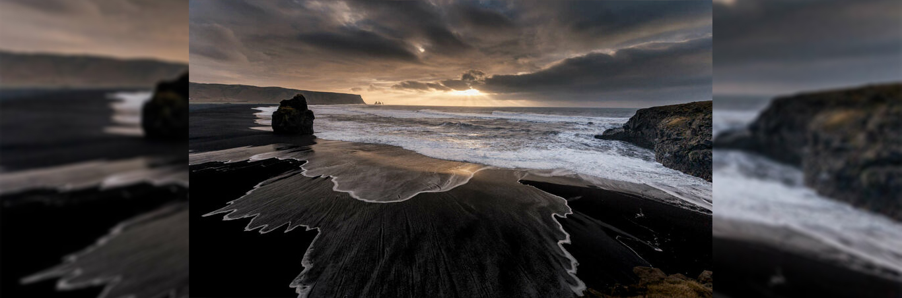

Pontos Turísticos Curiosos
Imagem: photosounds/Shutterstock
Praia Reynisfjara, na Islândia.
Com areia preta e um grande paredão de estacas de basalto vulcânico, o lugar nem de longe é indicado para tomar banho de mar ou pegar um sol (por motivos de: é a Islândia). Apesar disso, é bastante visitado por turistas. Tanto a areia preta da praia Reynisfjara como as pedrinhas à beira do mar e a gigante pilha de estacas nas encostas são formadas pela rocha vulcânica basalto.
Fonte: vix.com/mundo Acesso em 06/12/2019